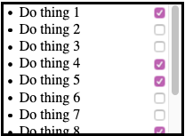
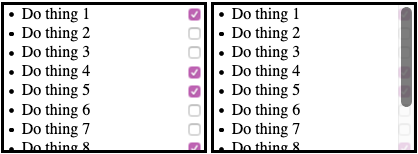
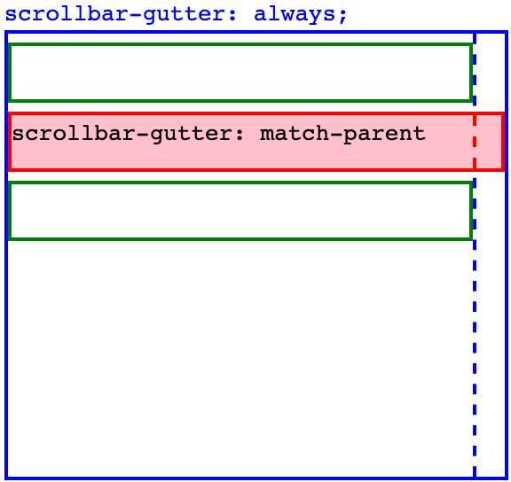
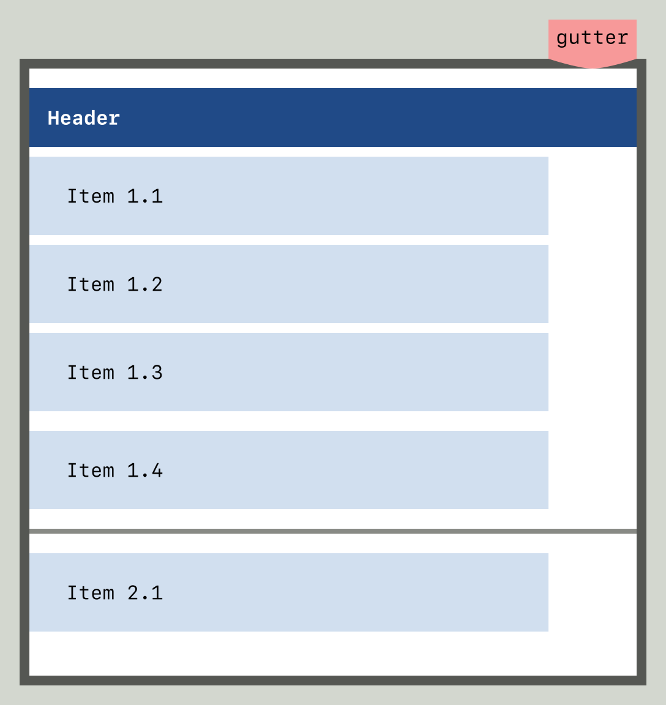
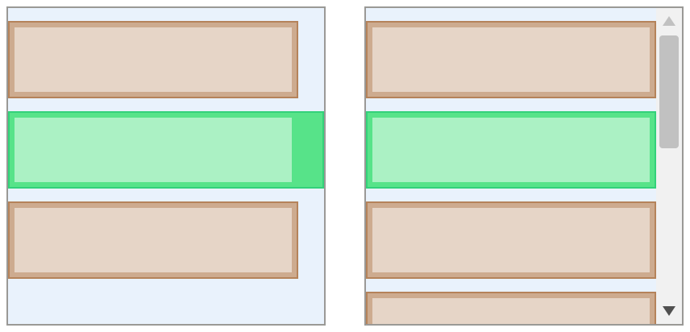
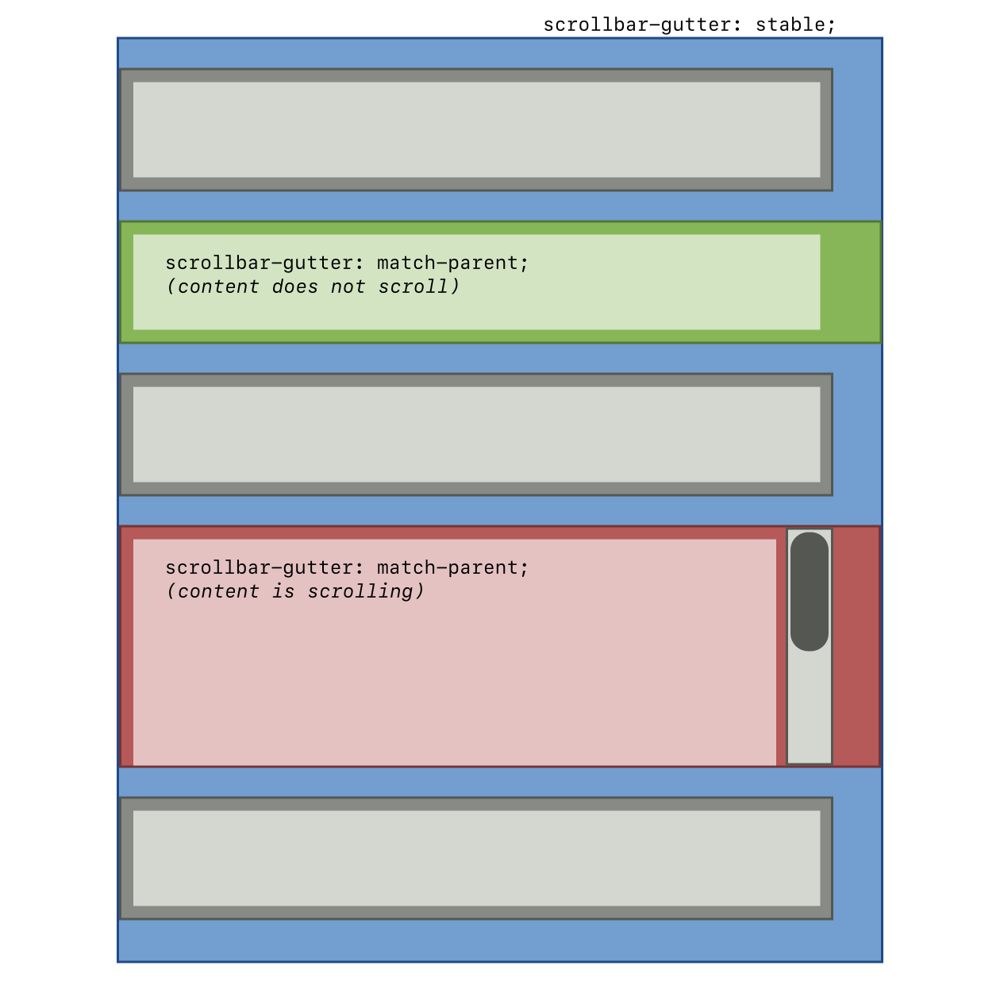
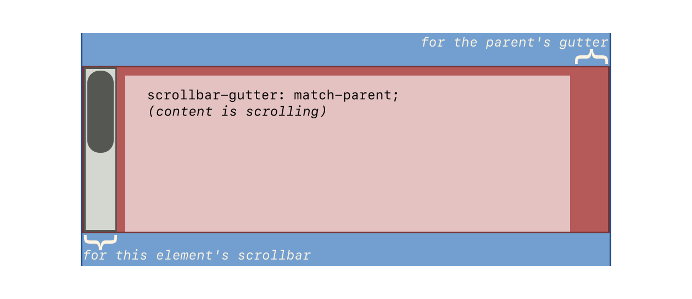
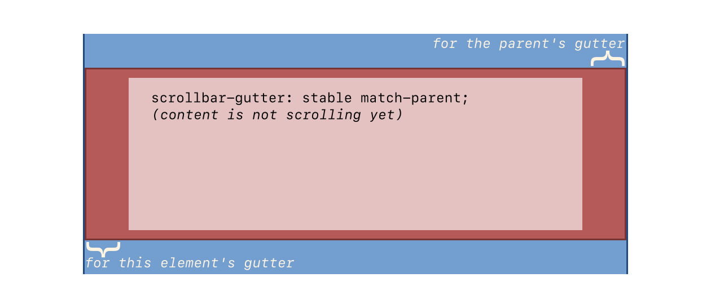

This module contains the features of CSS relating to scrollable overflow handling in visual media.
It builds on the CSS Overflow Module Level 3,
defining
line-clamp, its longhands, and its legacy pre-standard syntax;
adding a block-ellipsis property;
and expanding overflow-clip-margin with longhands.
CSS is a language for describing the rendering of structured documents
(such as HTML and XML)
on screen, on paper, etc.
Status of this document
This is a public copy of the editors’ draft.
It is provided for discussion only and may change at any moment.
Its publication here does not imply endorsement of its contents by W3C.
Don’t cite this document other than as work in progress.
Please send feedback
by filing issues in GitHub (preferred),
including the spec code “css-overflow” in the title, like this:
“[css-overflow] …summary of comment…”.
All issues and comments are archived.
Alternately, feedback can be sent to the (archived) public mailing list
www-style@w3.org.
This section defines some experimental extensions to the *-ellipsis properties in Level 3.
Note: At the time of writing, [CSS-OVERFLOW-3] is not completely finalized yet.
To avoid accidental divergences and maintenance overhead,
This specification is written as a delta specification over css-overflow Level 3.
Once the level 3 specification is final,
its content will be integrated into this specification,
which will then replace it.
Until then, this specification only contains additions and extensions to level 3.
1.1.
Value Definitions
This specification follows the CSS property definition conventions from [CSS2]
using the value definition syntax from [CSS-VALUES-3].
Value types not defined in this specification are defined in CSS Values & Units [CSS-VALUES-3].
Combination with other CSS modules may expand the definitions of these value types.
In addition to the property-specific values listed in their definitions,
all properties defined in this specification
also accept the CSS-wide keywords as their property value.
For readability they have not been repeated explicitly.
Note: Application of overflow to replaced elements was added
to allow images to paint effects outside their effective layout box;
the recommended UA style sheet rules are to effect their original behavior as a default.
See discussion in Issue 7059
and Issue 7144.
This is a change from CSS2.1
and is at-risk.
These properties and their shorthands
define the overflow clip edge of the box,
i.e. precisely how far outside its bounds
the box’s content is allowed to paint
before being clipped
by effects (such as overflow: clip, above)
that are defined to clip to the box’s overflow clip edge.
The shorthand/longhand relationships are as for margin,
but note that the shorthands have a restricted syntax.
The specified offset dictates
how much the overflow clip edge is expanded from
the specified box edge
Negative values are invalid.
Defaults to zero if omitted.
This section might need to be re-synced against [CSS-OVERFLOW-3].
This property specifies rendering when inline content overflows
its line box edge
in the inline progression direction of its block container element ("the block")
that has overflow
other than visible.
Even though this property is not inherited,
anonymous block container boxes generated to
establish the line box’s inline formatting context (see block container)
are ignored,
and the value of the property that applies is the one
on the non anonymous box.
This can be seen in the “nested paragraph” part of example 7:
even though the word “NESTED” is wrapped in an anonymous block container
whose text-overflow property has the initial value,
it is ellipsed.
Text can overflow for example when it is prevented from wrapping
(e.g. due to white-space: nowrap
or a single word is too long to fit).
Values have the following meanings:
clip
Clip inline content that overflows its block container element.
Characters may be only partially rendered.
ellipsis
Render an ellipsis character (U+2026)
to represent clipped inline content.
Implementations may substitute a more language, script, or writing-mode appropriate
ellipsis character,
or three dots "..." if the ellipsis character is unavailable.
Clip inline content that overflows its line box.
Characters may be only partially rendered.
In addition, the UA must apply a fade out effect
near the edge of the line box,
reaching complete transparency at the edge.
The argument determines the distance
over which the fade effect is applied.
The <percentage> is resolved against the width of the line box.
Values lower than 0 are clipped to 0.
Values greater than the width of the line box are clipped to the width of the line box.
If the line box is too short
to display the fade effect at the desired length,
should we drop the effect,
or shrink the distance it is applied over until it fits,
or clip the end of the fade?
How should we deal with
things overflowing out of the line box,
or overlapping onto it?
Should fade apply to the logical content of the line,
or to the physical area of the line box,
or the intersection of both?
fade
Same as fade(),
but the distance over which the fading effect is applied
is determined by the UA.
1em is suggested as a reasonable value.
The term "character" is used in this property definition
for better readability and means "grapheme cluster" [UAX29]
for implementation purposes.
If there is one value,
it applies only to the end line box edge.
If there are two values,
the first value applies to the line-left edge,
and the second value applies to the line-right edge.
The terms end, line-left and line-right are defined in [CSS-WRITING-MODES-3].
Note: the use of line-left and line-right
rather than start and end
when there are two values is intentional,
to facilitate the use of directional characters such as arrows.
For the ellipsis
and string values,
implementations must hide characters and
atomic inline-level elements
at the applicable edge(s) of the line as necessary to fit the ellipsis/string, and
place the ellipsis/string immediately adjacent
to the applicable edge(s) of the remaining inline content.
The first character or
atomic inline-level element
on a line
must be clipped rather than ellipsed.
Bidi ellipsis examples
These examples demonstrate which characters get hidden
to make room for the ellipsis in a bidi situation:
those visually at the edge of the line.
Sample CSS:
div {font-family: monospace;white-space: pre;overflow: hidden;width:9ch;text-overflow: ellipsis;}
Sample HTML fragments, renderings, and your browser:
HTML
Reference rendering
Your Browser
<div>שלום 123456</div>
123456 ם…
שלום 123456
<divdir=rtl>שלום 123456</div>
…456 שלום
שלום 123456
ellipsing details
Ellipsing only affects rendering and must not affect layout
nor dispatching of pointer events:
The UA should dispatch any pointer event on the ellipsis to the elided element,
as if text-overflow had been none.
The ellipsis is styled and baseline-aligned according to the block.
Ellipsing occurs after relative positioning and other graphical transformations.
If there is insufficient space for the ellipsis,
then clip the rendering of the ellipsis itself
(on the same side that neutral characters on the line
would have otherwise been clipped with the text-overflow:clip value).
user interaction with ellipsis
When the user is interacting with content
(e.g. editing, selecting, scrolling),
the user agent may treat ellipsis, string values, fade or fade() as text-overflow:clip.
Selecting the ellipsis should select the ellipsed text.
If all of the ellipsed text is selected,
UAs should show selection of the ellipsis.
Behavior of partially-selected ellipsed text is up to the UA.
text-overflow examples
These examples demonstrate setting the text-overflow of a block container element
that has text which overflows its dimensions:
sample CSS for a div:
div {font-family: Helvetica, sans-serif;line-height:1.1;width:3.1em;border: solid .1em black;padding:0.2em;margin:1em0;}
sample HTML fragments, renderings, and your browser:
HTML
sample rendering
your browser
<div>
CSS IS AWESOME, YES
</div>
CSS IS AWESOME, YES
<divstyle="text-overflow:clip; overflow:hidden">
CSS IS AWESOME, YES
</div>
CSS IS AWESOME, YES
<divstyle="text-overflow:ellipsis; overflow:hidden">
CSS IS AWESOME, YES
</div>
<divstyle="text-overflow:fade; overflow:hidden">
CSS IS AWESOME, YES
</div>
CSS IS AWESOME, YES
Note: the side of the line that the ellipsis is placed depends on the direction of the block.
E.g. an overflow hidden right-to-left
(direction: rtl)
block clips inline content on the left side,
thus would place a text-overflow ellipsis on the left
to represent that clipped content.
insert RTL example diagram here to illustrate note.
ellipsis interaction with scrolling interfaces
This section applies to elements with text-overflow other than text-overflow:clip
(non-clip text-overflow)
and overflow:scroll.
When an element with non-clip text-overflow has overflow of scroll
in the inline progression dimension of the text,
and the browser provides a mechanism for scrolling
(e.g. a scrollbar on the element,
or a touch interface to swipe-scroll, etc.),
there are additional implementation details that provide a better user experience:
When an element is scrolled (e.g. by the user, DOM manipulation),
more of the element’s content is shown.
The value of text-overflow should not affect
whether more of the element’s content is shown or not.
If a non-clip text-overflow is set,
then as more content is scrolled into view,
implementations should show whatever additional content fits,
only truncating content which would otherwise be clipped
(or is necessary to make room for the ellipsis/string),
until the element is scrolled far enough
to display the edge of the content
at which point that content should be displayed
rather than an ellipsis/string.
This example uses text-overflow on an element with overflow scroll
to demonstrate the above described behavior.
<divclass="crawlbar">
CSS is awesome, especially when you can scroll
to see extra text instead of just
having it overlap other text by default.
</div>
demonstration of sample CSS and HTML:
CSS is awesome, especially when you can scroll
to see extra text instead of just
having it overlap other text by default.
As some content is scrolled into view,
it is likely that other content may scroll out of view on the other side.
If that content’s block container element is the same
that’s doing the scrolling,
and the computed value of text-overflow has two values, with
the value applying to the start edge being a non-clip value,
then implementations must render an ellipsis/string in place of
the clipped content,
with the same details as described in the value definition above,
except that the ellipsis/string is drawn in the start
(rather than end) of
the block’s direction (per the direction property).
While the content is being scrolled,
implementations may adjust their rendering of ellipses/strings
(e.g. align to the box edges rather than line edges).
Same as previous example except with text-overflow: ellipsis ellipsis, demonstrated:
CSS is awesome, especially when you can scroll
to see extra text instead of just
having it overlap other text by default.
If there is insufficient space for both start
and end ellipses/strings,
then only the end ellipsis/string should be rendered.
4.2.
Indicating Block-Axis Overflow: the block-ellipsis property
This property allows inserting content into the last line box
before a (forced or unforced) region break or a clamp point
to indicate the continuity of truncated / interrupted content.
It only affects line boxes contained directly by the block container itself,
but as it inherits, will have an effect on descendants’ line boxes unless overridden.
Should this apply to other types of fragmentation breaks (e.g. pages, columns)?
The inserted content is called the block overflow ellipsis.
Values have the following meanings:
no-ellipsis
The rendering is unaffected.
auto
Render an ellipsis character (U+2026)—or a more typographically-appropriate equivalent—as the block overflow ellipsis
at the end of the affected line box.
UAs should use the conventions of the
content language,
writing system, and
writing mode
to determine the most appropriate ellipsis string.
Render the specified string
as the block overflow ellipsis
at the end of the affected line box.
The UA may truncate this string if it is absurdly long.
When set to the empty string,
the behavior is identical to the no-ellipsis value.
When block-ellipsis is neither no-ellipsis nor the empty string,
the block overflow ellipsis string
is wrapped in an anonymous inline
and placed at the end of the line box
as a direct child of the block container’s root inline box,
reducing the space in the line box
available to the other contents of the line.
This inline is assigned unicode-bidi: plaintext
and line-height: 0
and is placed in the line box after the last
soft wrap opportunity (see [CSS-TEXT-3])
that would still allow the entire block overflow ellipsis to fit on the line.
For this purpose, soft wrap opportunities added by overflow-wrap are ignored.
If this results in the entire contents of the line box being displaced,
the line box is considered to contain a strut, as defined in CSS 2 § 10.8.1 Leading and half-leading.
Text alignment and justification
occurs after placement,
and measures the inserted block overflow ellipsis
together with the rest of the line’s content.
Note: Setting the block overflow ellipsis’s line-height to 0
makes sure that inserting it cannot cause the line’s height to grow,
which could cause further relayouts and potentially cycles.
This is almost equivalent to inserting the block overflow ellipsis
as a paint-time operation, except that it still participates in alignment and justification.
The downside is that unusually tall / deep glyphs in the block overflow ellipsis
may overflow.
The UA must treat the block overflow ellipsis as an unbreakable string,
If any part of the block overflow ellipsis overflows,
it is treated as scrollable overflow,
and its rendering is affected by the text-overflow property.
The block overflow ellipsis does not capture events:
pointer events are dispatched to whatever is underneath it.
Note: Future specifications may extend this feature,
for example by providing an ::ellipsis pseudo-element
to style the text,
or by allowing the selection of a child element of the block
to use as either an inline-level or block-level indicator
(in which case, it can capture events).
5.
Fragmenting Overflow
5.1.
Limiting Visible Lines: the line-clamp shorthand property
It allows limiting the contents of a block container
to the specified number of lines;
remaining content is fragmented away
and neither rendered nor measured.
Optionally, it also allows inserting content into the last line box
to indicate the continuity of truncated/interrupted content.
See the corresponding longhand properties for details
about how this mechanism operates.
In this example, the lead paragraph of each article
is listed in a shortened menu,
truncated to fit within 5 lines
that end with “… (continued on next page)”:
li {line-clamp:5"… (continued on next page)";}
strong {display: block;text-transform: uppercase;}
<li><ahref="cheese-is-milk"><strong>Cheese is Actually Made of Milk!</strong>
Investigative reporters at the World Wide Web Press Corps
have discovered the secret of cheese.
Tracing through byzantine layers of bureaucracy and shadow corporations,
our crack team of journalists have traced the source of camembert.
</a></li>
Sample rendering:
+---------------------------------------+
| CHEESE IS ACTUALLY MADE OF MILK! |
| Investigative reporters at the World |
| Wide Web Press Corps have discovered |
| the secret of cheese. Tracing through |
| byzantine… (continued on next page) |
+---------------------------------------+
Note: Implementations of the legacy -webkit-line-clamp property
have not behaved identically to what is specified here.
The historical behavior is quirky and less robust,
as documented for example in this blog post.
The current design learns from the mistakes of that early experiment,
and is intended to be sufficiently compatible with existing content
that implementations can eventually be changed to follow to the specified behavior.
If further adjustments are found to be necessary,
they will be incorporated to this specification.
In the meanwhile, authors should be aware that there may be discrepancies.
5.2.
Forcing a Break After a Set Number of Lines: the max-lines property
If the box is a line-clamp container,
its clamp point is set
to the first possible clamp point after
its Nth
descendant in-flowline box.
If fewer than N line boxes exist,
or if there are no possible clamp points
after the Nth descendant in-flowline box,
then that line-clamp container has no clamp point.
Note: Despite the “region break” name, this is not a dependency on [CSS-REGIONS-1].
The word “region” is only used as a classifier for forced breaks:
they can be “page breaks” (breaks across pages [css-page-3]),
“column breaks” (breaks across multi-column layout columns [css-multicol-1]),
or “region breaks” (breaks across any other kind of CSS-induced fragmentation containers).
If an implementation supports neither [CSS-REGIONS-1] nor CSS Overflow 4 § A Redirection of Overflow,
then it will have had no occasion yet to run into that kind of breaks,
and this will be an addition.
However the addition does not involve bringing over any of the [CSS-REGIONS-1] functionality.
All that is needed is:
be able to fragment
classify these fragmentation containers as “Category 3”
(i.e. not pages nor columns)
for the purpose of forced breaks.
5.3.
Fragmentation of Overflow: the continue property
The continue property gives authors the ability
to truncate/interrupt the content inside a box,
either by visually hiding the remaining content,
or by turning the box into a fragmentation container (see [CSS-BREAK-3])
and discarding the content after the fragmentation break.
continue: discard is meant to generalize and replace the region-fragment property from [CSS-REGIONS-1].
Once it is sufficiently stable in this specification,
region-fragment should be removed from the regions specification in favor of this.
auto
If the box has more content than can fit,
the excess content is handled according to the usual rules.
If the box is a multicol container,
the behavior is the same as 'continue/auto'.
Given,
as in the illustration bellow,
an article with one excessively long overflowing line
and four more lines in the block dimension than can fit,
different renderings are possible based on the combination of the overflow and continue property.
A line-clamp container is an independentblock formatting context
that additionally follows the rules in this section.
Line-clamp containers can have a clamp point,
which is one of the following block-axis positions inside it:
If the line-clamp container’s block formatting context root
has a computed value of max-lines other than none,
then that property will determine the clamp point.
Otherwise, the clamp point will be set to the last possible clamp point
such that, for it and all previous possible clamp points,
the line-clamp container’s automatic block size
(as determined below)
is not greater than the block size the box would have
if its automatic block size were infinite.
If the block size would be infinite,
then there is no clamp point.
NOTE: If there are any floats before the clamp point,
the line-clamp container’s automatic size must grow to encompass the clearance,
just like it would if it were a regular block formatting context root
that only contained its contents before the clamp point.
This is regardless of whether this would cause any content after the clamp point
to be within the container’s bounds.
Appendix A: Possible extensions for scrollbar-gutter
This section is non-normative.
This section documents current attempts
at extending the scrollbar-gutter property
to solve additional use cases.
However, it does not currently have consensus.
It is presented here to encourage discussion,
but non-experimental implementation is not recommended.
This example exercises all the additional values of the scrollbar-gutter property:
For overlay scrollbars,
the precise width of the scrollbar gutter, if present, is UA defined.
However, it must not be 0,
and it must not change based on user interactions with the page or the scrollbar
even if the scrollbar itself changes,
with the expectation that it covers
the width of the overlay scrollbar in its widest form,
to the extent that this is well defined.
The new values of this property have the following meaning:
scrollbar-gutter: always can be bused to solve the problem
of (small) interactive elements near the edge of the element
getting covered by an appearing overlay scrollbar.
A representative case would be a basic todo list,
with each line starting with some text and ending with a right-aligned checkbox.
With a classic scrollbar, everything is fine,
but an overlay scrollbar could obscure the check boxes and make them hard to interact with.
Checkboxes adjacent to a classic scrollbar

Checkboxes and an overlay scrollbar

Overlay Scrollbar are typically transient and disappear when not interacted with,
so the checkboxes they cover are not impossible to use.
But when the scrollbar is shown it does get in the way,
and that makes for an awkward interaction.
The author might try and solve the problem by adding some right padding,
but (1) how much?,
and (2) that padding isn’t needed in the case of classic scrollbars.
scrollbar-gutter: always solves this problem,
yielding an identical result in first case of classic scrollbars,
but adding the desired gutter with overlay scrollbars:
Apple is reluctant to add this value,
as authors may use it too broadly,
inserting gutters with overlay scrollbars even when not justified by interactive elements,
defeating the space-saving advantage of overlay scrollbars.
An alternative solution has been suggested:
as the focus is interactive elements,
maybe we could have a property that applies to the elements
that needs to avoid being under the scrollbar.
When turned on, it would enlarge the right or left margin of the element as appropriate
by just the right value
to push it out from under an overlay scrollbar if that’s where it would end up,
but would leave the element unchanged otherwise.
Possibly, an addition toggle would cause the element
to enlarge both its inline-end and inline-start margins or neither,
rather than just one.
This could typically be useful for block-level descendants of the scroller
with visible borders or background:
adding space on one side to avoid collisions with the overlay scrollbar
would make them look off-center when the scrollbar disappears.
Increasing the margin on both sides avoids that.
Yet another possibility is to have a choice between growing the margin to protect the element,
or growing the padding to protect the element’s content.
The syntax could be something like scrollbar-avoid: none | [self | content] && both-edges?.
An interesting consideration is that this may alleviate the need for scrollbar-gutter: match-parent,
as it seems that situations that would have been addressed by scrollbar-gutter: stable or scrollbar-gutter: always on the parent
and scrollbar-gutter: match-parent on the select children
could instead be addressed by leaving the parent as scrollbar-gutter: auto
and using scrollbar-avoid: self or scrollbar-avoid: content on the relevant children.
match-parent
On a block-level box whose parent has a scrollbar gutter (or gutters on both edges),
this causes the box to have scrollbar gutter
on the same side(s) and of the same width as its parent’s gutter(s).
Moreover,
that gutter is made to overlap that of the parent box.

If the box with scrollbar-gutter: match-parent has a non-zero border or margin
on the side where the gutter is expected,
then the size of that box’s gutter is parent.gutter - child.border - child.margin,
and the gutter+border+margin is what collapses with the parent’s gutter.
If the box with scrollbar-gutter/ match-parent is itself a scroll container,
depending on the type of scrollbars,
on its overflow property,
and on the other values of the scrollbar-gutter property,
it may need additional gutter for its own scrollbars.
This comes in addition to the amount of gutter added for the sake of the match-parent value
and does not collapse with the parent’s gutter.
A scroller with an child whose background intrudes into the gutter, thanks to match-parent

A match-parent box inside a scroll container with classic scrollbars, overflow: auto, and scrollbar-gutter: stable

A scrollable box with match-parent inside another scroll container

A scrollable box with match-parent inside another scroll container, with bidi

A scrollable box with scrollbar-gutter:match-parent stable inside another scroll container, with bidi

Note: The following table summarizes the interaction of overflow and scrollbar-gutter
for different types of scrollbars,
showing in which case space is reserved for the scrollbar gutter.
Moved the core definition of scrollbar-gutter to [CSS-OVERFLOW-3]
(it will be copied back here once this specification is undiffed)
and shift exploratory scrollbar-gutter extension ideas into an appendix.
Blockify elements with (-webkit-)line-clamp,
display: -webkit-(inline-)box
and -webkit-box-orient: vertical.
(Issue 10324)
Changes Since Level 3
TBD
Acknowledgments
Thanks especially to the feedback from
Rossen Atanassov,
Bert Bos,
Andreu Botella,
Tantek Çelik,
John Daggett,
fantasai,
Daniel Glazman,
Vincent Hardy,
Håkon Wium Lie,
Peter Linss,
Robert O’Callahan,
Florian Rivoal,
Alan Stearns,
Steve Zilles,
and all the rest of the
www-style community.
Conformance
Document conventions
Conformance requirements are expressed with a combination of
descriptive assertions and RFC 2119 terminology. The key words “MUST”,
“MUST NOT”, “REQUIRED”, “SHALL”, “SHALL NOT”, “SHOULD”, “SHOULD NOT”,
“RECOMMENDED”, “MAY”, and “OPTIONAL” in the normative parts of this
document are to be interpreted as described in RFC 2119.
However, for readability, these words do not appear in all uppercase
letters in this specification.
All of the text of this specification is normative except sections
explicitly marked as non-normative, examples, and notes. [RFC2119]
Examples in this specification are introduced with the words “for example”
or are set apart from the normative text with class="example",
like this:
This is an example of an informative example.
Informative notes begin with the word “Note” and are set apart from the
normative text with class="note", like this:
Note, this is an informative note.
Advisements are normative sections styled to evoke special attention and are
set apart from other normative text with <strong class="advisement">, like
this:
UAs MUST provide an accessible alternative.
Tests
Tests relating to the content of this specification
may be documented in “Tests” blocks like this one.
Any such block is non-normative.
Conformance classes
Conformance to this specification
is defined for three conformance classes:
A style sheet is conformant to this specification
if all of its statements that use syntax defined in this module are valid
according to the generic CSS grammar and the individual grammars of each
feature defined in this module.
A renderer is conformant to this specification
if, in addition to interpreting the style sheet as defined by the
appropriate specifications, it supports all the features defined
by this specification by parsing them correctly
and rendering the document accordingly. However, the inability of a
UA to correctly render a document due to limitations of the device
does not make the UA non-conformant. (For example, a UA is not
required to render color on a monochrome monitor.)
An authoring tool is conformant to this specification
if it writes style sheets that are syntactically correct according to the
generic CSS grammar and the individual grammars of each feature in
this module, and meet all other conformance requirements of style sheets
as described in this module.
Partial implementations
So that authors can exploit the forward-compatible parsing rules to
assign fallback values, CSS renderers must
treat as invalid (and ignore
as appropriate) any at-rules, properties, property values, keywords,
and other syntactic constructs for which they have no usable level of
support. In particular, user agents must not selectively
ignore unsupported component values and honor supported values in a single
multi-value property declaration: if any value is considered invalid
(as unsupported values must be), CSS requires that the entire declaration
be ignored.
Implementations of Unstable and Proprietary Features
Once a specification reaches the Candidate Recommendation stage,
non-experimental implementations are possible, and implementors should
release an unprefixed implementation of any CR-level feature they
can demonstrate to be correctly implemented according to spec.
To establish and maintain the interoperability of CSS across
implementations, the CSS Working Group requests that non-experimental
CSS renderers submit an implementation report (and, if necessary, the
testcases used for that implementation report) to the W3C before
releasing an unprefixed implementation of any CSS features. Testcases
submitted to W3C are subject to review and correction by the CSS
Working Group.
If the line box is too short
to display the fade effect at the desired length,
should we drop the effect,
or shrink the distance it is applied over until it fits,
or clip the end of the fade? ↵
How should we deal with
things overflowing out of the line box,
or overlapping onto it?
Should fade apply to the logical content of the line,
or to the physical area of the line box,
or the intersection of both? ↵
insert RTL example diagram here to illustrate note. ↵
Should this apply to other types of fragmentation breaks (e.g. pages, columns)? ↵
continue: discard is meant to generalize and replace the region-fragment property from [CSS-REGIONS-1].
Once it is sufficiently stable in this specification,
region-fragment should be removed from the regions specification in favor of this. ↵
This section documents current attempts
at extending the scrollbar-gutter property
to solve additional use cases.
However, it does not currently have consensus.
It is presented here to encourage discussion,
but non-experimental implementation is not recommended. ↵
Apple is reluctant to add this value,
as authors may use it too broadly,
inserting gutters with overlay scrollbars even when not justified by interactive elements,
defeating the space-saving advantage of overlay scrollbars.
An alternative solution has been suggested:
as the focus is interactive elements,
maybe we could have a property that applies to the elements
that needs to avoid being under the scrollbar.
When turned on, it would enlarge the right or left margin of the element as appropriate
by just the right value
to push it out from under an overlay scrollbar if that’s where it would end up,
but would leave the element unchanged otherwise.
Possibly, an addition toggle would cause the element
to enlarge both its inline-end and inline-start margins or neither,
rather than just one.
This could typically be useful for block-level descendants of the scroller
with visible borders or background:
adding space on one side to avoid collisions with the overlay scrollbar
would make them look off-center when the scrollbar disappears.
Increasing the margin on both sides avoids that.
Yet another possibility is to have a choice between growing the margin to protect the element,
or growing the padding to protect the element’s content.
The syntax could be something like scrollbar-avoid: none | [self | content] && both-edges?.
An interesting consideration is that this may alleviate the need for scrollbar-gutter: match-parent,
as it seems that situations that would have been addressed by scrollbar-gutter: stable or scrollbar-gutter: always on the parent
and scrollbar-gutter: match-parent on the select children
could instead be addressed by leaving the parent as scrollbar-gutter: auto
and using scrollbar-avoid: self or scrollbar-avoid: content on the relevant children.
Firefox68+Safari5+Chrome6+Opera?Edge79+Edge (Legacy)17+IENoneFirefox for Android?iOS Safari?Chrome for Android?Android WebView37+Samsung Internet?Opera Mobile?
CanIUse
Support:Android Browser2.1+Baidu Browser13.52+Blackberry Browser7+Chrome4+Chrome for Android139+Edge12+Firefox7+Firefox for Android142+IE6+IE Mobile10+KaiOS Browser2.5+Opera11+Opera MiniAllOpera Mobile12.1+QQ Browser14.9+Safari3.1+Safari on iOS3.2+Samsung Internet4+UC Browser for Android15.5+